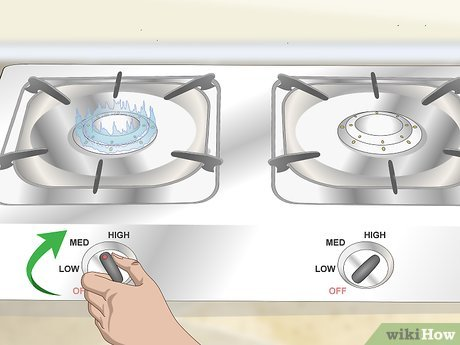
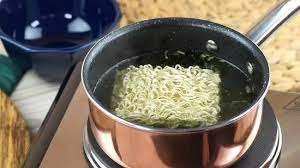
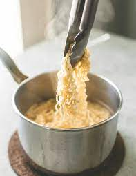
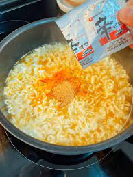

Do not attempt if you are allergic to wheat, egg, dairy, shrimp, pork and chicken, salmon, mackerel, soy, sesame, or gelatin
The reason i chose this food is because it’s a food I grew up on.
Though ramen is quite easy to make in the microwave, cooking it on a stove top feel like an accomplishment to a twelve-year-old.
This website is for twelve-year-olds like me who didn’t grow up having the money to buy an abundance of ingredients or the skills of a master chef.
Turn your stove to medium-high heat; hot enough for the water to boil but not overflow.
Pour your liquid of choice into the pot your cooking in, and set it on the eye of the stove.
When your liquid is boiling, insert only the noodles into the pot.
Stir the noodles occasionally until you think the texture is just right.
After turning the heat to low, add the packet of seasoning that came in your ramen package and mix.
 You can now move your noodles into a different bowl or just eat them straight from the pot!
The last step is to enjoy the masterpiece you just made.